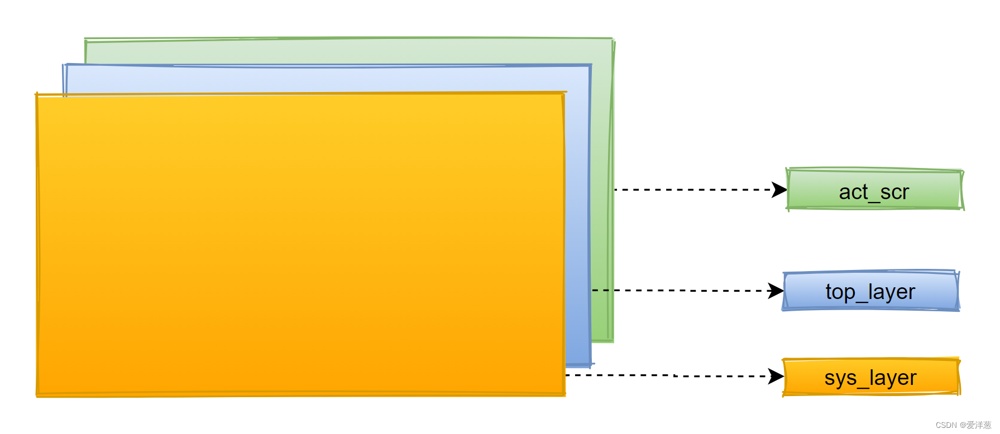
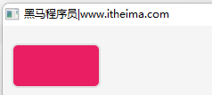
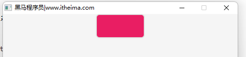
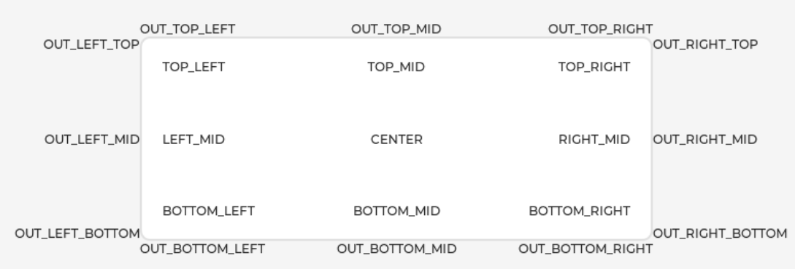
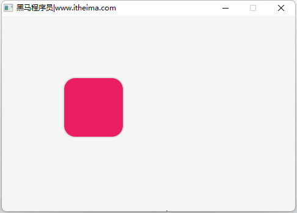

<!DOCTYPE lake>
<h1 data-lake-id="hVJn2" id="hVJn2"><span data-lake-id="u765bdd9e" id="u765bdd9e" style="color: rgb(64, 64, 64); background-color: rgb(252, 252, 252)">1.图层</span></h1><p data-lake-id="u75aac3c4" id="u75aac3c4"><span class="lake-fontsize-12" data-lake-id="u34eff827" id="u34eff827">LVGL具有图层概念,从顶层到底层依次是</span><code data-lake-id="u471267cd" id="u471267cd"><span class="lake-fontsize-12" data-lake-id="u0c5d9f28" id="u0c5d9f28">sys_layer</span></code><span class="lake-fontsize-12" data-lake-id="ubd415e38" id="ubd415e38">层、</span><code data-lake-id="u35788b3c" id="u35788b3c"><span class="lake-fontsize-12" data-lake-id="ucb2e9cc6" id="ucb2e9cc6">top_layer</span></code><span class="lake-fontsize-12" data-lake-id="u44dd11bb" id="u44dd11bb">层、</span><code data-lake-id="uaec2beda" id="uaec2beda"><span class="lake-fontsize-12" data-lake-id="u362e6962" id="u362e6962">act_scr</span></code><span class="lake-fontsize-12" data-lake-id="ub2a66ded" id="ub2a66ded">层。</span></p><p data-lake-id="u1caebf5f" id="u1caebf5f"></p><p data-lake-id="uc47fb0a2" id="uc47fb0a2"><code data-lake-id="uee257618" id="uee257618"><span class="lake-fontsize-12" data-lake-id="ufe5f4a47" id="ufe5f4a47">top_layer</span></code><span class="lake-fontsize-12" data-lake-id="u3b12c807" id="u3b12c807">层及</span><code data-lake-id="u84b5b664" id="u84b5b664"><span class="lake-fontsize-12" data-lake-id="ua5d85013" id="ua5d85013">sys_layer</span></code><span class="lake-fontsize-12" data-lake-id="u84f7b99a" id="u84f7b99a">层用来创建一些随处可见的内容。</span></p><p data-lake-id="u5ac19283" id="u5ac19283"><code data-lake-id="u381d0f96" id="u381d0f96"><span class="lake-fontsize-12" data-lake-id="u3dbc5fc4" id="u3dbc5fc4">top_layer</span></code><span class="lake-fontsize-12" data-lake-id="ua543aa4a" id="ua543aa4a">层可以用来创建菜单栏,弹出窗口等...</span></p><p data-lake-id="u8d3dcd3f" id="u8d3dcd3f"><span class="lake-fontsize-12" data-lake-id="ucf591a47" id="ucf591a47">鼠标光标可以放在所有层的上面以确保它始终可见,也就是放在</span><code data-lake-id="u0cc4ebb6" id="u0cc4ebb6"><span class="lake-fontsize-12" data-lake-id="u976f0f5c" id="u976f0f5c">sys_layer</span></code><span class="lake-fontsize-12" data-lake-id="u789f906b" id="u789f906b">层。</span></p><p data-lake-id="ua2ec215a" id="ua2ec215a"><span class="lake-fontsize-12" data-lake-id="u97fa22c5" id="u97fa22c5">一般都是在</span><code data-lake-id="u8288c00c" id="u8288c00c"><span class="lake-fontsize-12" data-lake-id="u26da72bf" id="u26da72bf">act_scr</span></code><span class="lake-fontsize-12" data-lake-id="u9abc072e" id="u9abc072e">层创建各种控件(widgets),也就是objects对象。</span></p><h1 data-lake-id="Y9TFS" id="Y9TFS"><span data-lake-id="ueb3727d6" id="ueb3727d6">2.objects</span></h1><p data-lake-id="u068584b9" id="u068584b9"><span class="lake-fontsize-12" data-lake-id="u3df7fc47" id="u3df7fc47" style="color: rgb(64, 64, 64); background-color: rgb(252, 252, 252)">在LVGL中,用户界面的基本构建块是对象,也称为Widgets。例如Button、Label、Image、List、图表或文本区域。</span></p><p data-lake-id="uce796265" id="uce796265"><span class="lake-fontsize-12" data-lake-id="u0bc11500" id="u0bc11500" style="color: rgb(64, 64, 64); background-color: rgb(252, 252, 252)">创建objects对象并显示在</span><code data-lake-id="u435472d3" id="u435472d3"><span class="lake-fontsize-12" data-lake-id="u7b5f8d81" id="u7b5f8d81" style="color: rgb(64, 64, 64); background-color: rgb(252, 252, 252)">act_scr</span></code><span class="lake-fontsize-12" data-lake-id="ub280f4ff" id="ub280f4ff" style="color: rgb(64, 64, 64); background-color: rgb(252, 252, 252)">层（Active Screen）上:</span></p><span class="yuque-card-unsupported">[codeblock]</span><p data-lake-id="u4b7a0001" id="u4b7a0001"><strong><span class="lake-fontsize-12" data-lake-id="u19268790" id="u19268790" style="color: rgb(64, 64, 64); background-color: rgb(252, 252, 252)">objects基本属性:</span></strong></p><ul list="ua8809533"><li data-lake-id="u025a2486" fid="u8a062f97" id="u025a2486"><span class="lake-fontsize-12" data-lake-id="u6d243209" id="u6d243209" style="color: rgb(64, 64, 64); background-color: rgb(252, 252, 252)">位置：</span><code data-lake-id="ued5dffaa" id="ued5dffaa"><span class="lake-fontsize-12" data-lake-id="u8b96f965" id="u8b96f965" style="color: rgb(64, 64, 64); background-color: rgb(252, 252, 252)">void lv_obj_set_pos(lv_obj_t * obj, lv_coord_t x, lv_coord_t y)</span></code></li><li data-lake-id="ue7dba28e" fid="u8a062f97" id="ue7dba28e"><span class="lake-fontsize-12" data-lake-id="u979e7c1e" id="u979e7c1e" style="color: rgb(64, 64, 64); background-color: rgb(252, 252, 252)">尺寸：</span><code data-lake-id="u2d21b0a0" id="u2d21b0a0"><span class="lake-fontsize-12" data-lake-id="u3d7f8d09" id="u3d7f8d09" style="color: rgb(64, 64, 64); background-color: rgb(252, 252, 252)">void lv_obj_set_size(lv_obj_t * obj, lv_coord_t w, lv_coord_t h)</span></code></li><li data-lake-id="u1aa1e5fd" fid="u8a062f97" id="u1aa1e5fd"><span class="lake-fontsize-12" data-lake-id="u564599cf" id="u564599cf" style="color: rgb(64, 64, 64); background-color: rgb(252, 252, 252)">align：</span><code data-lake-id="u75aff91a" id="u75aff91a"><span class="lake-fontsize-12" data-lake-id="u10b3565b" id="u10b3565b" style="color: rgb(64, 64, 64); background-color: rgb(252, 252, 252)">void lv_obj_align(lv_obj_t * obj, lv_align_t align, lv_coord_t x_ofs, lv_coord_t y_ofs)</span></code></li><li data-lake-id="uc1daa305" fid="u8a062f97" id="uc1daa305"><span class="lake-fontsize-12" data-lake-id="uea6147ca" id="uea6147ca" style="color: rgb(64, 64, 64); background-color: rgb(252, 252, 252)">样式：</span><code data-lake-id="u72d696ec" id="u72d696ec"><span class="lake-fontsize-12" data-lake-id="u29e85b90" id="u29e85b90" style="color: rgb(64, 64, 64); background-color: rgb(252, 252, 252)">void lv_style_init(lv_style_t * style);</span></code></li></ul><h2 data-lake-id="YCcVo" id="YCcVo"><span data-lake-id="u80287611" id="u80287611" style="color: rgb(64, 64, 64); background-color: rgb(252, 252, 252)">2.1 位置</span></h2><p data-lake-id="ud01c1028" id="ud01c1028"><span class="lake-fontsize-12" data-lake-id="u79ea65b1" id="u79ea65b1">objects设置位置的方法如下:</span></p><span class="yuque-card-unsupported">[codeblock]</span><blockquote data-lake-id="uf327971d" id="uf327971d"><p data-lake-id="uaa4e8c38" id="uaa4e8c38"><span class="lake-fontsize-12" data-lake-id="u486a89f7" id="u486a89f7">参数1:objects对象</span></p><p data-lake-id="u12d87b63" id="u12d87b63"><span class="lake-fontsize-12" data-lake-id="u78b9dd0c" id="u78b9dd0c">参数2和参数3:坐标x和y</span></p></blockquote><p data-lake-id="uda0f5e49" id="uda0f5e49"><span class="lake-fontsize-12" data-lake-id="uf492944d" id="uf492944d">实现代码:</span></p><span class="yuque-card-unsupported">[codeblock]</span><p data-lake-id="u1a5099c9" id="u1a5099c9"></p><p data-lake-id="ufc7c35be" id="ufc7c35be"><br/></p><p data-lake-id="ua67666c2" id="ua67666c2"><br/></p><h2 data-lake-id="OK1gQ" id="OK1gQ"><span data-lake-id="u366102c3" id="u366102c3">2.2 尺寸</span></h2><p data-lake-id="u4f4ae75c" id="u4f4ae75c"><span class="lake-fontsize-12" data-lake-id="u5ae0fe54" id="u5ae0fe54">objects设置尺寸的方法如下:</span></p><span class="yuque-card-unsupported">[codeblock]</span><blockquote data-lake-id="u42f0343a" id="u42f0343a"><p data-lake-id="udae1a7b5" id="udae1a7b5"><span class="lake-fontsize-12" data-lake-id="u11d07385" id="u11d07385">参数1:objects对象</span></p><p data-lake-id="ud7e27bb2" id="ud7e27bb2"><span class="lake-fontsize-12" data-lake-id="uc94c5d8f" id="uc94c5d8f">参数2:宽度</span></p><p data-lake-id="uead217e0" id="uead217e0"><span class="lake-fontsize-12" data-lake-id="ud59063b3" id="ud59063b3">参数3:高度</span></p></blockquote><p data-lake-id="u7378a8d4" id="u7378a8d4"><span class="lake-fontsize-12" data-lake-id="ud05131ba" id="ud05131ba">实现代码:</span></p><span class="yuque-card-unsupported">[codeblock]</span><h2 data-lake-id="J9ZU4" id="J9ZU4"><span data-lake-id="ua5f57774" id="ua5f57774">2.3 align</span></h2><p data-lake-id="u0529f12d" id="u0529f12d"><code data-lake-id="uba0449e3" id="uba0449e3"><span class="lake-fontsize-12" data-lake-id="uecc7c837" id="uecc7c837">lv_obj_align</span></code><span class="lake-fontsize-12" data-lake-id="u5c5aa041" id="u5c5aa041">用来设置obj在父控件中的显示位置,定义如下:</span></p><span class="yuque-card-unsupported">[codeblock]</span><blockquote data-lake-id="uca2bae6c" id="uca2bae6c"><p data-lake-id="ufa76c699" id="ufa76c699"><span class="lake-fontsize-12" data-lake-id="ue003becf" id="ue003becf">参数1:objects对象</span></p><p data-lake-id="u6f4ce8f9" id="u6f4ce8f9"><span class="lake-fontsize-12" data-lake-id="ue7c4376f" id="ue7c4376f">参数2:展示方式</span></p><p data-lake-id="uac04874c" id="uac04874c"><span class="lake-fontsize-12" data-lake-id="u2628db3c" id="u2628db3c">参数3:在x方向的偏移</span></p><p data-lake-id="udcc73dfb" id="udcc73dfb"><span class="lake-fontsize-12" data-lake-id="u82025621" id="u82025621">参数4:在y方向的偏移</span></p></blockquote><p data-lake-id="u85ac8bd2" id="u85ac8bd2"><span class="lake-fontsize-12" data-lake-id="u6af51a79" id="u6af51a79">实现代码:</span></p><span class="yuque-card-unsupported">[codeblock]</span><p data-lake-id="ube5e0f02" id="ube5e0f02"></p><p data-lake-id="u9ed7d489" id="u9ed7d489"><br/></p><blockquote data-lake-id="uf95be4b1" id="uf95be4b1"><p data-lake-id="u0a901afa" id="u0a901afa"><span class="lake-fontsize-12" data-lake-id="u67f74c8d" id="u67f74c8d">常见的展示方式有:</span></p><p data-lake-id="uac12e2ca" id="uac12e2ca"><span data-lake-id="ud7b194b5" id="ud7b194b5">    LV_ALIGN_DEFAULT = 0,</span></p><p data-lake-id="u4e7d9d69" id="u4e7d9d69"><span data-lake-id="u201e0521" id="u201e0521">    LV_ALIGN_TOP_LEFT,  </span></p><p data-lake-id="u263f0ca4" id="u263f0ca4"><span data-lake-id="uc80347ec" id="uc80347ec">    LV_ALIGN_TOP_MID,  </span></p><p data-lake-id="uf893dc7c" id="uf893dc7c"><span data-lake-id="u47a3920b" id="u47a3920b">    LV_ALIGN_TOP_RIGHT,</span></p><p data-lake-id="ubc395dde" id="ubc395dde"><span data-lake-id="ud2189761" id="ud2189761">    LV_ALIGN_BOTTOM_LEFT,</span></p><p data-lake-id="u798f47fa" id="u798f47fa"><span data-lake-id="u85959efd" id="u85959efd">    LV_ALIGN_BOTTOM_MID,</span></p><p data-lake-id="uf5cea524" id="uf5cea524"><span data-lake-id="u7aab51e3" id="u7aab51e3">    LV_ALIGN_BOTTOM_RIGHT,</span></p><p data-lake-id="u754b7291" id="u754b7291"><span data-lake-id="u7cd6f5f8" id="u7cd6f5f8">    LV_ALIGN_LEFT_MID,</span></p><p data-lake-id="ud6b1ef90" id="ud6b1ef90"><span data-lake-id="u8e4036e0" id="u8e4036e0">    LV_ALIGN_RIGHT_MID,</span></p><p data-lake-id="u6b1c2f5f" id="u6b1c2f5f"><span data-lake-id="u81b33196" id="u81b33196">    LV_ALIGN_CENTER</span></p></blockquote><p data-lake-id="u7b08a9b7" id="u7b08a9b7"></p><h2 data-lake-id="yJ738" id="yJ738"><span data-lake-id="ub8f0c758" id="ub8f0c758">2.4 样式</span></h2><p data-lake-id="u75fced2f" id="u75fced2f"><span class="lake-fontsize-12" data-lake-id="u583c0892" id="u583c0892">Styles用于设置对象的外观。样式是一个</span><code data-lake-id="u3f5b3b36" id="u3f5b3b36"><span class="lake-fontsize-12" data-lake-id="u43eb0115" id="u43eb0115">lv_style_t</span></code><span class="lake-fontsize-12" data-lake-id="ube9fbfbf" id="ube9fbfbf">类型的变量,它可以保存边框宽度、文本颜色等属性。</span></p><p data-lake-id="uff002af6" id="uff002af6"><span class="lake-fontsize-12" data-lake-id="u600cb1df" id="u600cb1df">创建样式变量:</span></p><span class="yuque-card-unsupported">[codeblock]</span><p data-lake-id="u4d55b7a4" id="u4d55b7a4"><span class="lake-fontsize-12" data-lake-id="u72e1d308" id="u72e1d308">初始化样式方法:</span></p><span class="yuque-card-unsupported">[codeblock]</span><p data-lake-id="u65f8bea9" id="u65f8bea9"><span class="lake-fontsize-12" data-lake-id="ubf1da76f" id="ubf1da76f">给objects添加style:</span></p><span class="yuque-card-unsupported">[codeblock]</span><blockquote data-lake-id="uede4872d" id="uede4872d"><p data-lake-id="ubb568b2c" id="ubb568b2c"><span class="lake-fontsize-12" data-lake-id="ufa8b6609" id="ufa8b6609">参数1:objects对象</span></p><p data-lake-id="ub75307ff" id="ub75307ff"><span class="lake-fontsize-12" data-lake-id="ucb2b29e5" id="ucb2b29e5">参数2:style样式</span></p><p data-lake-id="u19b6face" id="u19b6face"><span class="lake-fontsize-12" data-lake-id="u0d298b37" id="u0d298b37">参数3:设置obj的状态或part,这里默认写0即可</span></p></blockquote><p data-lake-id="u7d133eb5" id="u7d133eb5"><span class="lake-fontsize-12" data-lake-id="ub3a9b402" id="ub3a9b402">经常设置的样式:</span></p><span class="yuque-card-unsupported">[codeblock]</span><p data-lake-id="u52c668ef" id="u52c668ef"><span class="lake-fontsize-12" data-lake-id="uaf6099e7" id="uaf6099e7">代码实现:</span></p><span class="yuque-card-unsupported">[codeblock]</span><p data-lake-id="u5039674f" id="u5039674f"></p>